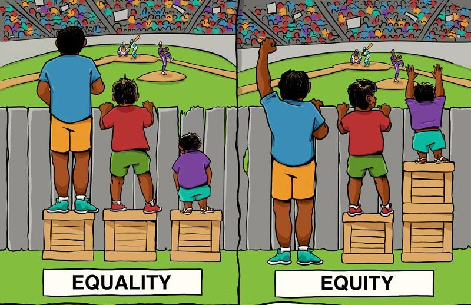

Core Values
In the previous section we talked about the relationship between science and society, and tried to imagine an ideal research landscape transformed by Open Science. In this unit we’ll dive a little deeper and get to the core beliefs that underlie OS principles and practices.
The fundamental values we’ll look at include
- Scientific quality and integrity;
- Equity;
- Communication; and
- Diversity and inclusion
Scientific Integrity
Though we haven’t mentioned the phrase "scientific integrity", we have looked at the critical role it plays in replicability and Open Science. Integrity involves sticking to best practices for research that promote reproducibility through transparency and open access. At its root, this principle springs from a sense of responsibility for public welfare and from the honest pursuit of scientific truth.
In a literal sense, transparency is the property of an object that makes it so clear that you can see through it. But what about when we talk about transparency in government policy, or scientific research? In this context, transparency implies a high degree of disclosure - revealing clearly the exact reasoning and process used in coming to a decision or taking an action. As well, transparency means taking care to disclose important information in a respectful and responsible fashion.
Best Practices
Scientific integrity implies several practices:
- Basing research conclusions and public policy on solid information and analyses that are clearly evident to everyone;
- Evaluating scientific work using fair, rigorous criteria and procedures known to all involved;
- Publishing good science, period (not just flashy science);
- Fully disclosing study methods and outcomes regardless of the findings being "significant";
- Following best practices for creating hypotheses, collecting data, and analyzing results;
- Demonstrating sensitivity to stakeholders' ownership of knowledge and data; and
- Providing equitable access to all outputs of the research cycle.
As we saw in the last section, these form key elements of our ideal research ecosystem, where the public trusts science and studies can be tested and repeated.
Transparency & Grading
One case where students want and need transparency is in grading. Most of you probably appreciate knowing how marks were given to questions on a midterm exam and what criteria the marker used to score each question. This provides you with both a reason for the assigned grade and a means of comparing your grade with those of your classmates.
Ultimately, this specific information can help you to address gaps in your knowledge and perform better on future assessments (such as the final exam). In the same way, transparency in research allows scientists to improve future studies and add to accumulated knowledge.
Equity
What is equity? Does equity equal equality?
Equity and equality are similar, but there is a key distinction: under equality everyone is treated in an identical manner, whereas under equity everyone is treated fairly according to their abilities and needs.
The following image nicely illustrates the concept of equity:

Image attribution: Universalincome [cropped] by Leigh Blackall under Attribution 2.0 Generic (CC BY 2.0).
Communication
We do research to learn; we share our findings to build a culture of learning and to enhance the future of our disciplines. We also share to build community with researchers and other stakeholders.
But because there can be a range of stakeholders with different needs, values, and backgrounds, it is important to communicate science in ways that consider these specific attributes. Processes and findings need to be contextualized (put into a context meaningful to the particular stakeholder) and made accessible, both in message (the content of the communication) and medium (the way the message is conveyed). The more avenues through which we share and engage and the fewer barriers to access we put up, the more equitably our discoveries can be shared.
Equity in science communication can be explored in many ways; none addresses all issues of equitable access, but each helps to enhance scientific literacies in our society.
- Open access publications help to make research available to those who cannot afford costly journal subscriptions.
- Citizen science engages members of the public in the research process, contributing their voices to projects.
- Novel ways of sharing a message, like podcasts or Twitter, can reach communities with unique access needs or preferences.
Audience
The language and techniques your Biology professor uses to communicate scientific information will vary according to her audience. Depending on whom she’s interacting with, your Biology professor will use different language and techniques to convey scientific information. For example, in the course of her work, she may be:
- Engaging you and your classmates in learning in the classroom;
- Talking to a member of the public;
- Working on research with a departmental colleague; or
- Advising a government employee involved in writing policy.
In each case, she adjusts her communication to match her audience’s needs, educational background, and experience. Her message isn’t fundamentally changed or simplified, but it does need to be delivered in a way that is understanding and respectful of her audience.
Effects of DDT on Birds: Three Approaches
Consider each of the following three explanations of how DDT affects birds in terms of its intended audience.
Aimed at Researchers in the Discipline
Dichlorodiphenyltrichloroethane (DDT) is a persistent organochlorine compound found worldwide that causes significant anatomical, physiological and behavioural abnormalities in humans and wildlife (Iwaniuk et al. 2006).
Aimed at Post-Secondary Science Students
DDT and its metabolites cause eggs to have thin shells and reduce levels of a hormone necessary for female birds to lay eggs. Population declines and local disappearance of peregrine falcons, bald and golden eagles, ospreys, kestrels, and other predatory birds were recorded (Cox 1991).
Aimed at the General Public
High concentrations of DDT in birds cause weakness in the shells of their eggs, which leads to a reduction in their population. DDT is now banned because of this (Bitesize n.d.).
Diversity & Inclusion
You’ve almost certainly heard these terms, but may wonder if there’s a difference between them.
In the context of Open Science diversity is the practice or quality of engaging in research with individuals who vary in terms of social class, ethnic background, sexual orientation, gender, religious, ability, etc.
Inclusion takes this diverse engagement further: it looks at the individual in relation to the community, organization, or society, and ensures that they not only participate in, but guide the research process, especially as the research impacts these diverse communities as stakeholders in the research process and the implementation of findings from research.
Looking back at our discussion in the previous section, diversity and inclusion seem to be natural partners of equity.
Diversity in Research Culture
Diverse criticism of scientific ideas makes research more robust, and challenges biases and assumptions that might otherwise pass unchecked.
Divergent perspectives, skill sets, and ideas introduce the "outside-of-the-box" thinking that drives research forward. Involving a diversity of views and people enriches research.
Diversity and inclusion show up in many types of research activities that involve participation and collaboration. Participation and collaboration can take many forms.
- Citizen science engages the public in data collection and processing.
- Partnership research turns the relationship between researcher and subject into a partnership, where both contribute to the research question, methods, and outcomes.
- International collaborations increase cultural diversity and can address problems that cross borders, like disease epidemics or pollution.
- Interdisciplinary research, such as collaborations between medical researchers on the one hand and veterinarians and animal specialists on the other, can help investigate complex questions like how the COVID-19 coronavirus evolves in intermediate hosts before being transferred to humans.
Partnership Research: Integrated Knowledge Translation (IKT)
Historically, there has been an imbalanced power relationship between people with differing physical abilities or medical conditions and the experts responsible for their care, medical treatment or research of their conditions.
In recent years, however, patient rights movements have focused on returning power to people undergoing medical care. And researchers and practitioners are adapting their practices, recognizing that people living with a medical condition hold unique knowledge about how it affects them, and this lived experience can be used to improve both research and outcomes.
An interdisciplinary panel of researchers from both UBC campuses, led by Dr. Kathleen Martin-Ginis, has engaged with people living with spinal cord injury (SCI) to set up guidelines for collaboration that give those with SCI a voice in the research process, from the choice of avenues to investigate to decisions on the implementation of research results. This model of collaborative research, which is known as Integrated Knowledge Translation, has been shown to (Gainforth et al. 2021):
- Improve the quality of science;
- Increase the probability that findings will be used in real life in policy or practice;
- Facilitate learning among all parties involved; and
- Make research more relevant to patient needs.
You can check out one output from this research, the Integrated Knowledge Translation (IKT) Guiding Principles for Conducting Spinal Cord Injury (SCI) Research in Partnership.
Government Policy: Diverse Teams Informing Species Risk Assessment
Dr. Jeannette Armstrong was born and raised in the South Okanagan, on the Penticton Indian reserve. Dr. Armstrong is well known as an author, poet, educator, and Indigenous rights activist.
At UBC Okanagan, she holds a Canada Research Chair in Okanagan Indigenous Knowledge and Philosophy. She is also one of several people on a subcommittee of The Committee on the Status of Endangered Wildlife in Canada (COSEWIC), which advises the Minister of Environment and Climate Change Canada on designation of species at risk (Li n.d.) (Status of Endangered Wildlife in Canada n.d.).
The COSEWIC website states:
Incorporating Aboriginal Traditional Knowledge into COSEWIC’s assessment of species at risk improves the process, and therefore the quality of designations made by COSEWIC, by bringing information and perspectives on wildlife species that are not available in published scientific literature.
References
Bitesize, BBC. n.d. “Food Chains and Food Webs.” BBC Bitesize. Accessed May 28, 2021. https://www.bbc.co.uk/bitesize/guides/zq4wjxs/revision/5.
Cox, Caroline. 1991. “Pesticides and Birds: From DDT to Today’s Poisons.” Journal of Pesticide Reform 11 (4). https://eap.mcgill.ca/MagRack/JPR/JPR_14.htm.
Gainforth, Heather L., Femke Hoekstra, Rhyann McKay, Christopher B. McBride, Shane N. Sweet, Kathleen A. Martin Ginis, Kim Anderson, et al. 2021. “Integrated Knowledge Translation Guiding Principles for Conducting and Disseminating Spinal Cord Injury Research in Partnership.” Archives of Physical Medicine and Rehabilitation 102 (4): 656–63. https://doi.org/10.1016/j.apmr.2020.09.393.
Iwaniuk, Andrew N., Dallas T. Koperski, Kimberly M. Cheng, John E. Elliott, Lori K. Smith, Laurie K. Wilson, and Douglas R. W. Wylie. 2006. “The Effects of Environmental Exposure to DDT on the Brain of a Songbird: Changes in Structures Associated with Mating and Song.” Behavioural Brain Research 173 (1): 1–10. https://doi.org/10.1016/j.bbr.2006.05.026.
Li, May. n.d. “Jeannette’s Story.” Our Stories. Accessed May 28, 2021. https://ourstories.ok.ubc.ca/stories/jeannette-armstrong/.
Status of Endangered Wildlife in Canada, Committee on the. n.d. “ATK Subcommittee Members.” Accessed May 28, 2021. https://cosewic.ca/index.php/en-ca/about-us/cosewic-subcommittees/atk-subcommittee-members.